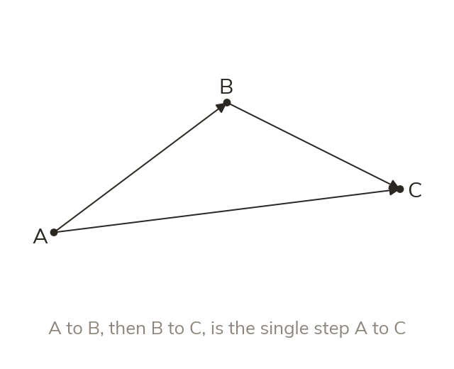
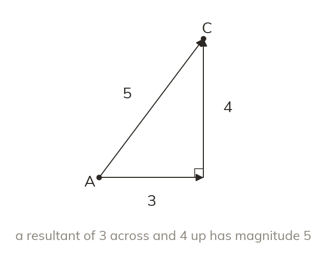

Head to tail
Vectors add head to tail, and the sum is called the resultant. So AB→ + BC→ = AC→.
A boat's own velocity and the current's velocity add up to where the boat really goes. Today we add and subtract vectors, by drawing and by column vectors.
Work down the page at your own pace. Write every answer in your book first, then click to check it.
Read each card, then follow the worked examples one step at a time.

Vectors add head to tail, and the sum is called the resultant. So AB→ + BC→ = AC→.

Column vectors add and subtract one component at a time. Subtracting b is the same as adding -b.
Pick an answer. If it's wrong, the feedback tells you which mistake it was.
Read each card, then follow the worked examples one step at a time.

A resultant's magnitude comes from its own components, by Pythagoras. So 3 across and 4 up make 5, not 7.

A vector equation holds component by component. It gives one equation for the top and one for the bottom.
Pick an answer. If it's wrong, the feedback tells you which mistake it was.
Finished? Next lesson: 11H.8.4 Vector Routes in Shapes.
Log in, then search for a code to practise that skill.
Videos, worksheets and more on each part of this lesson.